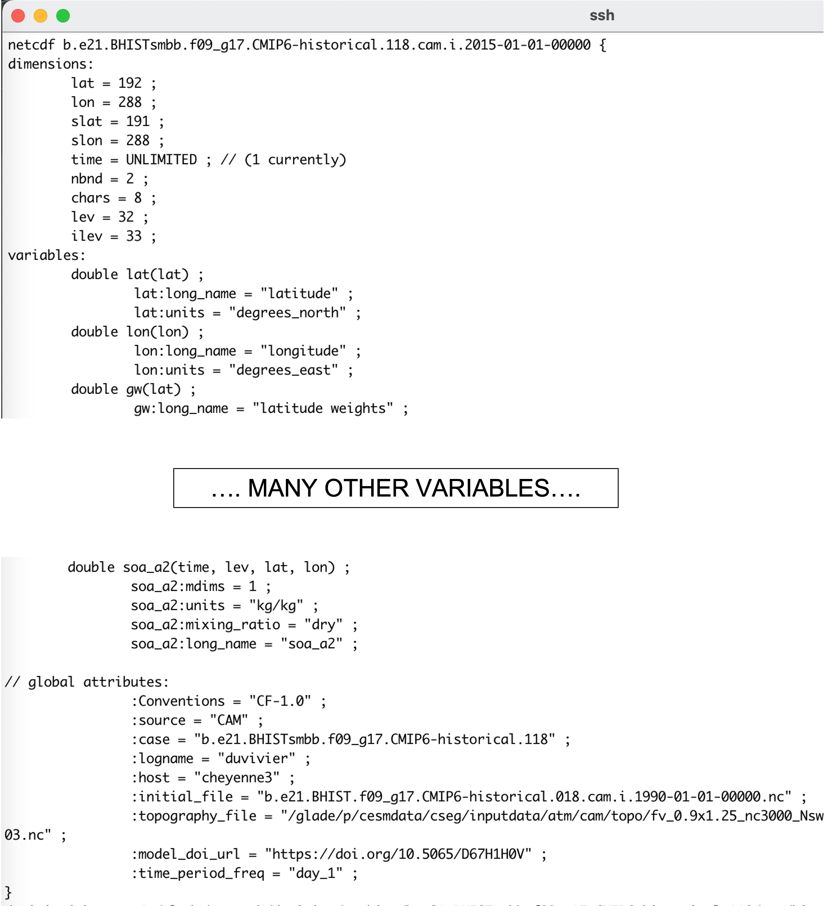
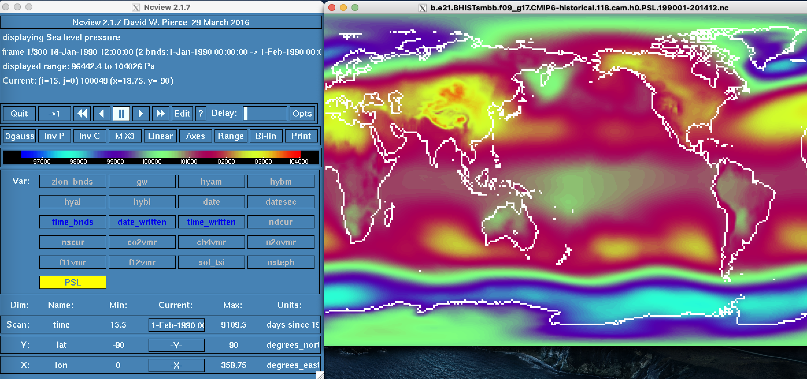
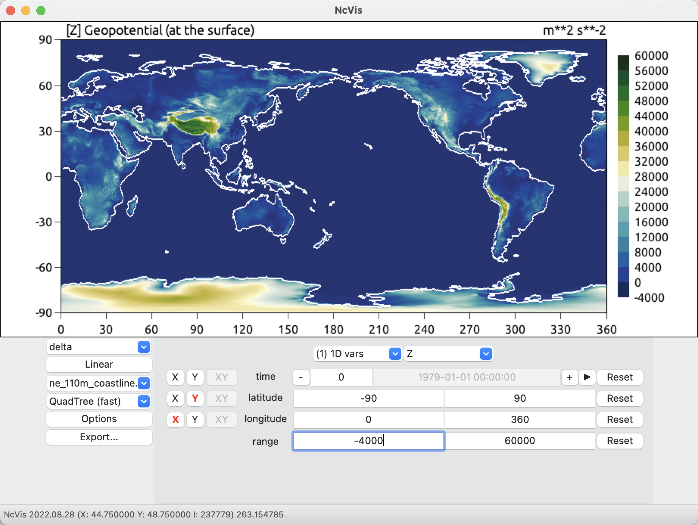

NetCDF files#
All CESM model output is in netCDF (*.nc) data format. Below, you will find some useful information for how to navigate and manipulate CESM netCDF files.
NetCDF#
NetCDF stands for “network Common Data Form”. NetCDF files are array-oriented and a community standard for sharing scientific model data.
Some benefits of netCDF files include that they:
Are self describing and generally include substantial metadata to assist with comprehension of the data.
Supported by a range of languages (Fortran, C, Matlab, ferret, GrADS, NCL, IDL, python).
Appendable, so data can be added to a file.
Viewable with tools like ncview and panopoly.
The files are saved in netcdf format (denoted with the .nc file extension), a file format commonly used for storing large, multi-dimensional scientific variables.
Netcdf files are platform independent and self-describing; each file includes metadata that describes the data, including: variables, dimensions, and attributes.
The figure below provides a generic example of the data structure in a netcdf file. The dataset illustrated has two variables (temperature and pressure) that have three dimensions. Coordinate data (e.g., latitude, longitude, time) that describe the data are also included.

ncdump#
Sometimes you want to see what information a netCDF file without fully opening it. ncdump is a command line netCDF utility that allows the user to dump the contents of the netCDF file to the terminal screen or to a file in a human-readable format.
NOTE: ncdump is installed by default as part of the netCDF libraries.
To view the header of a netCDF file, use the following command:
ncdump -h file.nc
At the command line, you get the following information from the ncdump -h command. It includes the dimensions in the file, a list of variables, and global attributes that can be very useful.

Figure: Example output from the ncdump -h command.
To view the contents of a variable, use the following command:
Note that you must verify the variable exists in the file by first doing a the command above.
ncdump -v PSL file.nc
To view the netCDF file type, use the following command:
ncdump –k file.nc
To print readable date-time strings, use the following command:
ncdump –t –v time file.nc
ncview#
ncview is a graphical interface which allows the user to quickly view the variables inside a NetCDF file. ncview also allows the user to interactively visualize a selected variable aross a selected range (time, spatial).
NOTE: ncview must be loaded as a module in your HPC environment. See section (Modules).
ncview file.nc

Figure: Example output from ncview command.
ncvis#
ncvis is another NetCDF file viewer, very similar to ncview. ncvis has the capability to visualize data on unstructured grids.
NOTE: ncvis must be loaded as a module in your HPC environment. See section (Modules).
ncvis file.nc

Figure: Example output from ncvis command.
netCDF Operators (NCO)#
NCO is a suite of programs designed to perform certain “operations” on netCDF files, i.e., things like averaging, concatenating, subsetting, or metadata manipulation.Command-line operations are extremely useful for processing model data given that modelers often work in a UNIX-type environment.
We will describe a few key types of NCO operators below, but there are many other NCO operators beyond these that could be of use. We recommend visiting the NCO page to get full documentation.
NOTE: nco must be loaded as a module in your HPC environment. See section (Modules).
ncra is a netCDF record averager that averages across the record dimesion (i.e. time) for the files specified. The example below shows the command for how to average across two files from different months.
ncra file1.nc file2.nc avgfile.nc
ncrcat is a netCDF record concatenator that combines the files specified across the record dimesion (i.e. time). The example below shows the command for how to concatenate two files from different months into a single file that will have two timesteps.
ncrcat file1.nc file2.nc out12.nc
ncdiff is a netCDF differener that will reveal differences between files. The example below shows the command for how to create a file showing differences between two files from different months.
ncdiff file1.nc file2.nc diff.nc
ncks stands for netCDF kitchen sink and has numerous functions that may be useful. The examples below show
how to use NCO operator options to subset only some specified variables from the input file because the
-voption operates only on the variables listed.how to use NCO operator options to subset only a given latitude and longitude range because the
-doption operates on the dimensions. Note that real numbers indicate coordinate values while integers indicate array indexes.
ncks –v T,U,PS file_in.nc file_out.nc
ncks -d lon,0.,180. -d lat,0,63 file_in.nc file_out.nc
Climate Data Operators (CDO)#
CDO are a suite of command line operators to manipulate and analyze climate and NWP model data. CDO are similar to NCO. The CDO library inclues over 600 command line operators that do a variety of tasks including: detrending, EOF analysis, metadata modification, statistical analysis, etc.
NOTE: cdo must be loaded as a module in your HPC environment. See section (Modules).